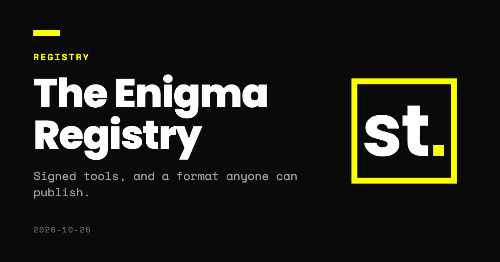

October 25, 2026
Introducing the Enigma Registry

When we launched Sanctum, the Catalogue tab got a single paragraph. It deserves more, because the registry behind it is how most people first meet a tool in Sanctum, and because anyone can publish one in the same format.
A registry is a set of static files on an HTTPS address. It holds a catalogue, a list of withdrawn versions, and one signed bundle for each tool. The Enigma Registry is the one Sanctum knows from the first launch. It is served from sanctum.enigma.sh/registry/v1/, and its root key is compiled into the application.
What is in it
The registry currently lists three tools, all published by Enigma and all free:
- Shamir Secret Sharing splits a secret into shares and rebuilds it from any chosen number of them. Each share carries a checksum, so a mistyped or missing share produces a clear error rather than a wrong secret. It asks Sanctum for no access.
- OTP Vault generates time based one time codes. The vault is encrypted in the tool's own storage, and with smart card access approved for the OATH applet it can write a secret to a YubiKey and let the key compute each code. It asks for storage and that one applet, and nothing on the network.
- PDF Watermark is new to the registry. It places a visible, traceable mark on a PDF before you share it, with the recipient's name on every page and a unique ID in the document. It also asks for no access.
Each is a single HTML file that does one narrow job without a network connection, the kind of tool that benefits most from being fixed and signed.
What a signature proves
Every tool in the registry is a bundle. The publisher signs a short statement naming the tool, its version, the SHA-256 of the file and the capabilities it declares. The registry key separately signs the catalogue. Before installing anything, Sanctum checks both signatures, checks that the file matches its hash, and scans the file itself. If the capabilities it finds differ from the signed declaration, the install is refused.
The catalogue and the list of withdrawn versions both carry a serial number and an expiry date. A serial that goes backwards is rejected, so an old catalogue cannot be replayed to hide a withdrawal. The withdrawal list is valid for fourteen days and the catalogue for ninety, and a scheduled job checks them every week and fails as soon as either has lapsed, so that we renew them rather than leave them stale.
None of this says that a tool is safe, and the interface never claims so. A signature establishes who published the file and that it has not changed. It does not grant access. A tool installed from the Enigma Registry starts with nothing approved, exactly like a file you drag into the window, and you approve each capability on the usual screen.
The registry is free, and it is not the only one
Enigma signs only its own tools. We take no cut and sell nothing through the registry. A third party who wants to distribute tools signs them with its own key, and that key appears as an unknown signer until the person installing chooses to trust it.
For most organisations the more useful step is to run their own registry. A team can list the tools it has reviewed, and a vendor can publish its own. Nothing in the format requires a server that runs code, so GitHub Pages, an object store or an internal web server will do. The first time someone adds it, Sanctum shows the signing key and asks them to compare it with the one you published. Our guide, Run your own registry, takes you from nothing to a working registry in ten steps.
What comes next
Update notices for installed tools and a faster way to withdraw a harmful version are things we would like to build, though we have not scheduled them. More tools will follow when we have written ones we would rely on ourselves.
To try the registry, open the Catalogue tab in Sanctum, or choose Install in Sanctum on any tool's page. We would like to hear what you think at ultra@enigma.sh.